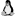

description
MiniLight is a minimal global illumination renderer. It is primarily an exercise in simplicity. But that makes it a good base and benchmark (in some sense) for development and experimentation. And it just might be the neatest renderer around (on average, about 650 lines). There are translations into several programming languages.
Someone asked me how to develop a renderer in three months. It seemed not nearly enough time. But then I began to think how small such a program could be, whilst still being a complete physically based simulation with a clear, well-formed design. (A somewhat different aim from the ‘Minimal Ray Tracer Programming Contest’ of 1987.) I couldn't resist an attempt.
It is a command-line application. It reads a simple text model file and writes a PPM image file. Supported platforms include Mac , Linux , and Windows  .
.
The rendering features are:
- Monte-carlo path-tracing transport
- Emitter sampling
- Progressive refinement
- RGB light
- Diffuse materials
- Triangle modelling primitives
- Octree spatial index
- Pin-hole ‘lens’
- Ward linear tone-mapping
Full source code is provided under the CC0 license.
images
A Cornell Box (of course) throughout the day:
|
Cornell Box, at morning (24 KiB)
|
Cornell Box, at noon (23 KiB)
|
Cornell Box, at evening (26 KiB)
|
Cornell Box, at night (23 KiB)
|
{kind=link}
The models are physically based too. For example, at noon: The sky has a colour temperature of 10000K and a luminance of 1 x 104 cd/m2. The sun has a colour temperature of 5400K and a luminance of 1 x 109 cd/m2, a diameter of 1.392 x 109 m, and distance of 149.6 x 109 m. (It is just a square though.)
Some of the Smits test scenes:
|
Smits tests (32 KiB)
|
A room, at noon-ish, and night (made in HDR and tonemapped with p3tonemapper):
|
Front room, at noon (97 KiB)
|
Front room, at night (47 KiB)
|
All these renders are 1000 paths per pixel. The standard Cornell Box, at 500 x 500 pixels, should take about 15 minutes on a 2007 machine.
(Models/scenes are just in a simple individual text format, but if they were in JSON a suggested JSON-schema of the model/scene format is here.)
comparison
There are now eight translations:
| language and version | size lines of code | size relative to C | speed paths per sec | speed relative to C |
|---|---|---|---|---|
| Scala 2.10.0 | 444 | 0.36 | 20082 | 1 / 4.6 |
| 473 | 0.39 | 40282 | 1 / 2.3 | |
| Python 2.6.1 | 510 | 0.42 | 403.79 | 1 / 230 |
| Python PyPy 2 beta 1 | 510 | 0.42 | 5658.0 | 1 / 16 |
| Python ShedSkin 0.1.1 | 516 | 0.42 | 24985 | 1 / 3.7 |
| Ruby 1.8.7 | 523 | 0.43 | 185.46 | 1 / 500 |
| 557 | 0.46 | 1320.1 | 1 / 70 | |
| 557 | 0.46 | 6889.0 | 1 / 13 | |
| Scheme R5RS (Racket 5.3) | 677 | 0.56 | 1263.0 | 1 / 73 |
| C++ ISO-98 (LLVM-G++-4.2) | 957 | 0.79 | 62580 | 1 / 1.5 |
| 1249 | 1 | 92445 | 1 |
Line counts disclude comments and blanks and lines with only single braces/parentheses.
Speed measurements were done on a Core2-Duo Mac, using the roomfront (non-sun) model. They are just rough indications.
‘Paths’ actually also send a ‘shadow ray’ at each node – so twice the paths-per-second would give general basic ray-traces/intersections-per-second.
C was faster than C++ probably mostly because LLVM's link-time optimisation worked for C, but not for C++.
Scala, Lua and Ruby are twice as slow without some manual optimization (Python too, probably). This is mostly inlining some vector operations (but also a little loop unrolling, and flattening the image pixel array).
algorithm
path tracing
The simplest method of global illumination is pure monte-carlo path tracing. For each pixel, a ray is sent into the scene. When it hits something it notes its color and emission. It then bounces off and continues. Eventually all the noted info is sent back, step by step. Each step scales the light by certain factors until a final value is returned to the pixel. Repeat the whole process many times with some randomness added and average all the results. An image slowly emerges.
This strategy is essentially a blind search for light emitters. Unless a ray hits an emitter it will return only blackness. For outdoor scenes most rays will bounce into the sky, and find brightness. But for indoors the emitters are small and many many rays are needed to find them. It is too slow.
emitter sampling
This can be alleviated with emitter sampling. The location of all emitters is known from the model, and this can be used. Each step sends an extra ray to an emitter. But now there are two rays gathering the incoming light they must not duplicate any. To ensure this, ‘local’ emission at each bounce is no longer included.
monte carlo
Each interaction along the main path is handled mostly by monte-carlo. The bounce direction is chosen by importance sampling: proportionally more likely in directions the surface allows more reflection through. For ideal diffuse that is lots near perpendicular, little near grazing. The overall reflectivity is controlled by russian-roulette: proportionally more likely to bounce the more reflective the surface is. This allows a non-arbitrary end for the recursion. The colour is just scaling, because there is no advantage in monte-carlo there.
Both uses of monte-carlo sample more where the surface interaction transfers more light. This is a fairly good approach.
Why? A simple analysis is that apparent noisiness is the product of detail/richness and intensity: greater detail means adjacent pixels more likely see different values, greater intensity probably means more contrast. The latter is easiest to address, because interaction's effect on intensity is simple. The treatment—sampling more—reduces noise by averaging-out the effect of the randomness.
Over many iterations this puts more computation into resolving more visibly noisy regions, rather than wasting it on regions that won't noticeably improve. That computes an image of particular quality more quickly. But there are still shortcomings . . .
rendering equation
Here is the specific rendering equation for this algorithm:
Meaning: The radiance outward at a position and direction equals the sum of two terms (the first representing the main path, the second the emitter sampling). The first term integrates over the surrounding hemisphere of directions the inward radiance scaled by its projection and the reflectivity function. The second term sums over all emitters, for each integrating over the area the emission scaled by the solid angle, the visibility, the projection, and the reflectivity function.
unbiased?
Monte-carlo path-tracing is described as ‘unbiased’. The term is now sometimes used in the manner of a marketing tag. Its real meaning is too abstract for that purpose. It denotes a lack of consistent error—the only error is in the effects of the randomness. Such niceties are appropriate for mathematics but for engineering we must live by practicalities. All implementations are biased and incorrect in various ways. The task is to arrange them acceptably.
ultimately
The value of this method is its simplicity, while having full generality. It allows the implementation to be almost proven correct by inspection. (Correct meaning ‘following the rules for a particular standard approximation’.) The images produced can be authoritative references for other renderers.
The core idea has also proven remarkably durable and adaptable since Whitted's paper of 1980. One could reasonably call it the key engineering concept for rendering, and it looks to remain so.
pseudocode
Here is the algorithmic structure in high-level pseudocode/PDL (produced by editing the code comments into a reduced form).
Whereas the actual source-code is broken into modules and procedures, this represents the sequence in a single coherent view. Thought of like geographic maps, the first is roughly 38:1 scale, the second 10:1.
High-level – 38:1 Scale
17 lines – roughly 1 for every 38 of actual code.
- render, by progressive refinement
- render a frame, to the image
- sample each image pixel
- make sample ray direction
- get radiance returning in sample direction
- intersect ray with scene
- if intersection hit
- get local emission (only for first-hit)
- calculate emitter sample
- calculate recursive reflection
- sum local emission, emitter sample, and recursive reflection
- else no hit
- use default/background scene emission
- add radiance to image
- save image
- divide pixel values by frame count
- apply tonemapping factor
Medium-level – 10:1 Scale
66 lines – roughly 1 for every 10 lines of actual code.
- render, by progressive refinement, as many frames as wanted
- display UI feedback
- render a frame, to the image
- sample each image pixel
- make sample ray direction (with sub-pixel jitter)
- get radiance returning in sample direction
- intersect ray with scene
- if octree branch
- step through subcells and recurse
- find which subcell holds ray origin
- step through intersected subcells
- intersect nested subcell (by recursing)
- exit branch if triangle hit
- find next subcell ray moves to
- move to (outer face of) next subcell, or exit branch
- else octree leaf
- exhaustively intersect contained triangles
- avoid false intersection with triangle just come from
- intersect ray with triangle
- check if nearest so far
- check intersection is inside cell bound
- note hit details
- if intersection hit
- get local emission (only for first-hit)
- read triangle attribute
- calculate emitter sample:
emissive area, ideal diffuse BRDF:
reflected = (emitivity * solidangle) * (emitterscount) *
(cos(emitdirection) / pi * reflectivity)
- request emitter sample point from scene
- if emitter sample point available
- if shadow ray is unshadowed
- calculate inward emission value
- emit from front face of triangle only
- estimate solid angle
- multiply emitivity by solid angle
- calculate amount reflected by triangle
- check both directions are on same side of triangle
(no transmission)
- calculate ideal diffuse BRDF:
radiance scaled by reflectivity, cos, and 1/pi
- scale radiance by number of emitters in scene
- calculate recursive reflection:
single hemisphere sample, ideal diffuse BRDF:
reflected = (inradiance * pi) * (cos(in) / pi * color) *
reflectance
reflectance magnitude is 'scaled' by the russian roulette,
cos is importance sampled, and the pi and 1/pi cancel out,
leaving just: inradiance * reflectance color
- calculate next direction
- do russian-roulette with reflectivity 'magnitude'
- if alive
- make direction as cosine-weighted importance sample
of hemisphere
- make color by dividing-out mean from reflectivity
- if not path end
- recurse to 'get radiance returning in sample direction'
- scale recursed radiance by color
- sum local emission, emitter sample,
and recursive reflection
- else no hit
- use default/background scene emission
- add radiance to image
- save image periodically
- divide pixel values by frame count
- apply (Ward linear) tonemapping factor
- write image file (PPM P6 format)
downloads
Version 1.6
(updated 2013-05-04)
| minilight16src.tar.gz | All source code in one package (167 KiB) |
| minilight16exe.zip | Executables (from C) (Mac, Linux, Windows) (146 KiB) |
|
|
Sha-256 sums (1 KiB) |
Individually:
| minilight16c.tar.gz | C ISO-90 source code (36 KiB) |
| minilight16ocaml.tar.gz | OCaml 4.00 source code (31 KiB) |
| minilight16scheme.tar.gz | Scheme R5RS source code (36 KiB) |
| minilight16lua.tar.gz | Lua 5.1 / 5.2 source code (23 KiB) |
|
|
C++ ISO-98 source code (35 KiB) |
| minilight16scala.tar.gz | Scala 2.9 source code (30 KiB) |
|
|
Python 2.5 / 2.6 source code (16 KiB) (Translation by Juraj Sukop) |
| minilight16ruby.tar.gz | Ruby 1.8 source code (22 KiB) |
Version 1.7
(updated 2013-05-04 – now supporting process-level parallelism and distribution)
| minilight17c.tar.gz | C ISO-90 source code (48 KiB) |
external
| MiniLight Java | translated by Tom Eklöf |
|
|
translated (with small extras) by Chris Lomont |
| MiniLight F# | translated by Ian Voyce |
| MiniLight Clojure 2009 | partial, by Mark Reid |
| MiniLight OCaml | adjustments by Mauricio Fernández |
| MiniLight JavaScript 3 | in progress, by Darius Bacon |
related
|
|
by Bruno Nery |
contribution
If you can't resist doing a translation, I can probably add/link to it. It is a good way to learn 80% of a new language.
Anyone else is, of course, free to diverge from the original guidelines, but they might be worth considering:
- Make it compact and simple (these are the priority), by good use of the language.
- Only optimize where really needed, and not excessively (you want to find out how well the compiler/language can do for itself with no manual help).
- Perhaps follow the main module separation design.
- Write the best code possible!
Maybe sacrifice some clarity for compactness in the SpatialIndex module – it is a bit large (it deserves careful testing, too). And, only to make the sizes comparable:
- lines should be <= 80 chars
- indent ought to be 3-ish chars (but mixing tabs and spaces is a heinous sin!)
The main reference versions are Scheme, OCaml and C.
hxa7241+www (ατ) googlemail (dοτ) com